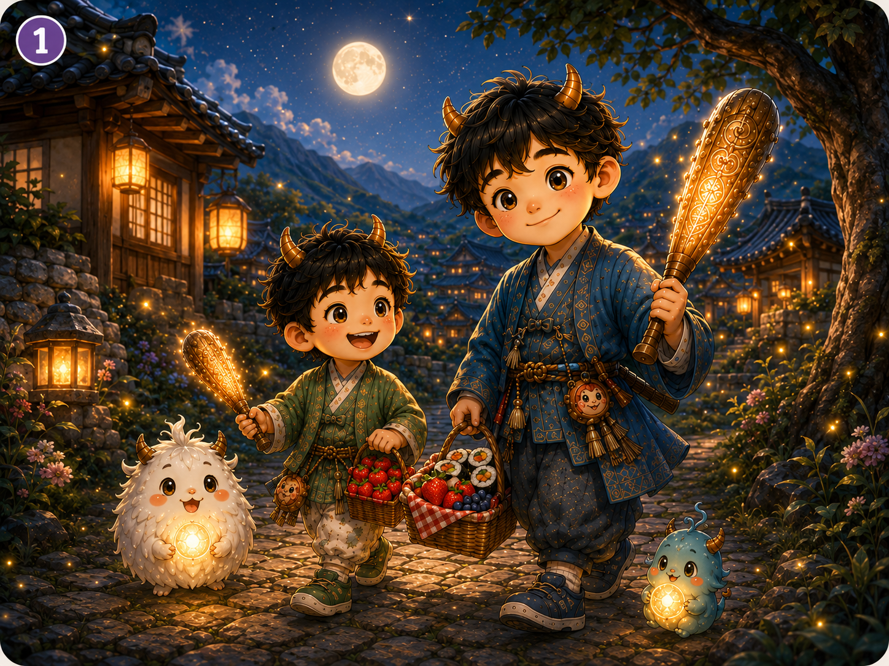
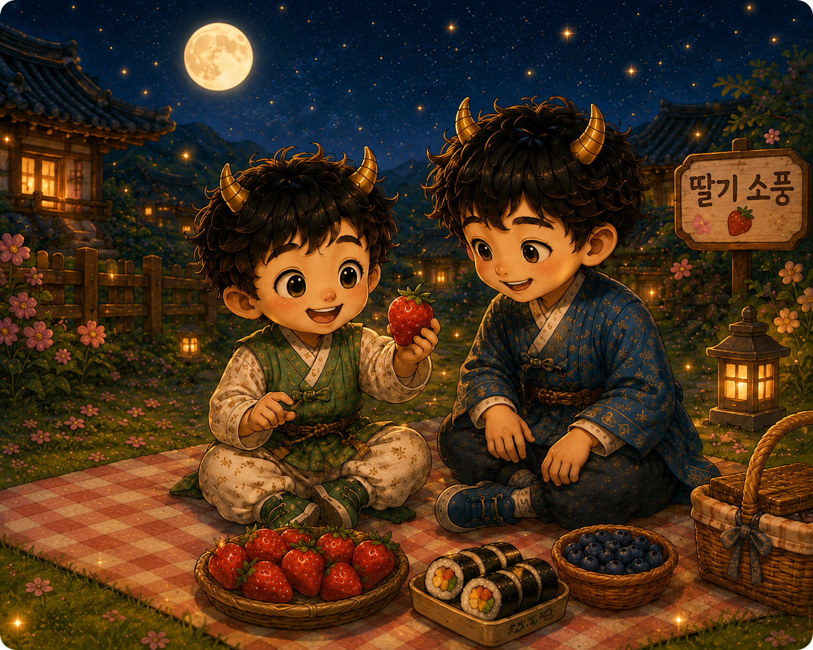
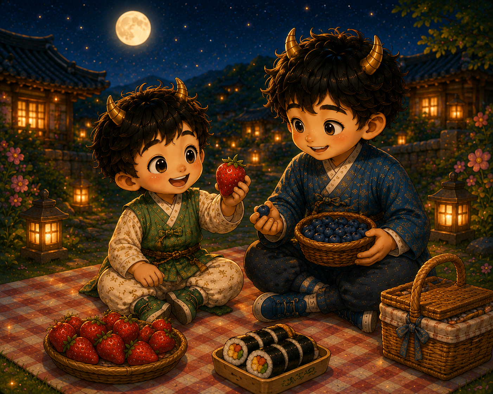
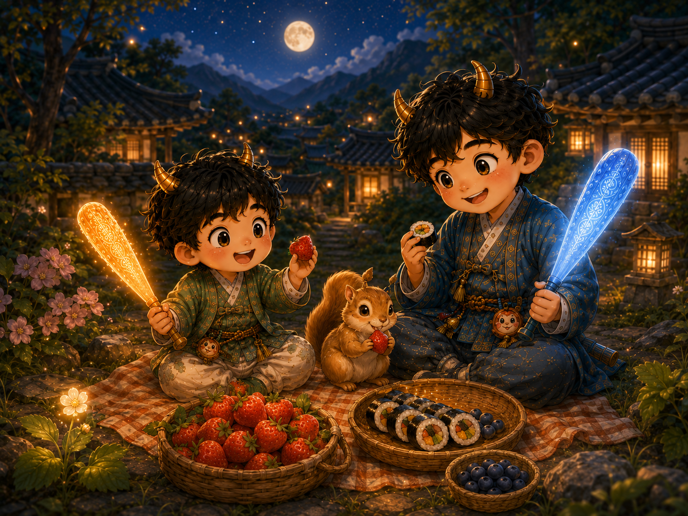

민이와 진이가 딸기 소풍을 가요. 바구니를 잃은 다람쥐를 도와주며, 작은 딸기 마법을 배우는 이야기예요.

어느 날 저녁,
민이와 진이는 딸기 소풍을 갔어요.
바구니에는 딸기, 김밥, 블루베리가 있었어요.

“딸기다!”
민이는 "나는 딸기가 제일 맛있어".
민이의 눈이 반짝였어요.

진이는 "나는 블루베리가 제일 맛있어."라고 말했어요.
“같이 먹자.”
민이와 진이는 맛있게 땰기와 블루베리를 먹고 있었어요.
그때, 작은 다람쥐가 울먹이고 있었어요.
“내 소풍 바구니가 없어졌어.”
민이와 진이는 다람쥐를 도와주기로 했어요.
민이는 딸기빛 방망이를 흔들었어요.
작은 딸기 불빛들이 반짝반짝 나타났어요.
진이는 하얀빛 방망이로 길을 밝혔어요.
빛나는 길은 꽃 옆 돌담으로 이어졌어요.
그곳에 다람쥐의 바구니가 있었어요!

모두 함께 음식을 나눠 먹었어요.
다람쥐도 행복하게 웃었어요.
민이의 방망이가 살짝 반짝였어요.
그리고 작은 딸기꽃 하나가 피어났어요.
연습하고 싶은 단어를 골라 보세요.